Medição da catalase em células de levedura permeabilizadas
A catalase é uma enzima que catalisa a decomposição do peróxido de hidrogénio em água e oxigénio.
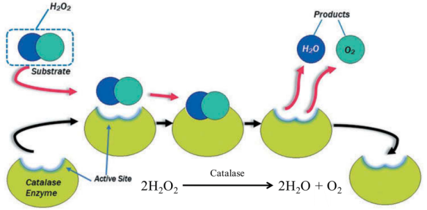
Figura 1
O objetivo desta aula prática é medir a atividade da catalase em células de permeabilizadas de levedura Saccharomyces cerevisiae.
Contexto
A acil-CoA oxidase é a primeira enzima da via peroxisomal da β-oxidação, responsável por catalisar a oxidação da acil-CoA, um processo que decompõe ácidos gordos.
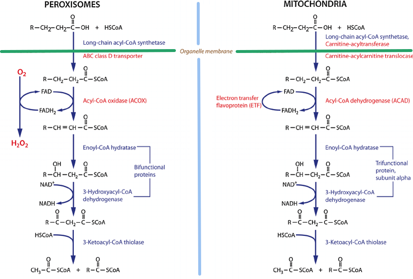
Figura 2
Ao contrário das mitocôndrias, onde o FADH₂ entra na cadeia transportadora de eletrões, o FADH₂ peroxisomal doa diretamente os seus eletrões ao oxigénio molecular, resultando na formação de peróxido de hidrogénio (H₂O₂). Este passo é único na β-oxidação peroxisomal, já que, nas mitocôndrias, os transportadores de eletrões como o FADH₂ contribuem para a síntese de ATP através da fosforilação oxidativa. Nas peroxissomas, no entanto, o FADH₂ é rapidamente oxidado de volta para FAD, permitindo a oxidação contínua dos ácidos gordos, mas produzindo H₂O₂ como subproduto em vez de ATP.
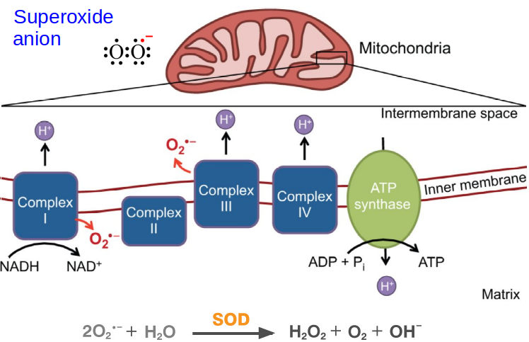
Figura 3
Os Complexos I e III podem, inadvertidamente, perder eletrões para o oxigénio molecular, formando superóxido. O ânion superóxido (O₂⁻•) gerado nos Complexos I e III da cadeia transportadora de eletrões mitocondrial é desintoxicado principalmente pela enzima superóxido dismutase (SOD).
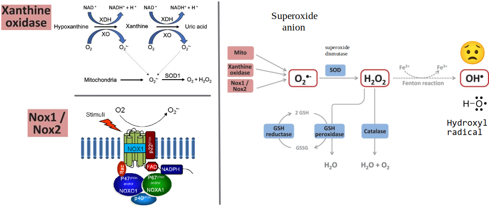
Figura 4
NOX1 e NOX2 são enzimas que pertencem à família da NADPH oxidase (NOX), desempenhando papéis cruciais na produção de espécies reativas de oxigénio (ROS) como parte da sinalização celular e respostas imunitárias. Ao contrário da geração de ROS mitocondrial, estas enzimas geram ROS diretamente na membrana celular ou em compartimentos celulares específicos.
NOX1
- Localização: Expressa principalmente em células epiteliais, incluindo as do cólon e em células musculares lisas vasculares.
- Função: A NOX1 gera superóxido (O₂⁻•), que pode ser convertido em outras ROS, como o peróxido de hidrogénio (H₂O₂).
- Papel na função celular: Envolvida na sinalização celular relacionada à proliferação, migração e respostas imunitárias. A NOX1 também está implicada na remodelação vascular, respostas inflamatórias e na progressão de alguns tipos de cancro, onde as ROS desempenham um papel na sinalização do crescimento celular.
NOX2
- Localização: Conhecida principalmente pelo seu papel em células fagocíticas (como neutrófilos e macrófagos), mas também é expressa noutros tipos de células.
- Função: A NOX2 é crucial para a resposta imunitária, pois produz superóxido em fagossomas para destruir patógenos ingeridos. O superóxido gerado pela NOX2 contribui para a “explosão respiratória”, uma libertação rápida de ROS que mata bactérias e outros patógenos.
- Papel na defesa do hospedeiro: As ROS derivadas da NOX2 são críticas na defesa antimicrobiana. Defeitos hereditários na NOX2 levam a uma capacidade reduzida de combater infeções.
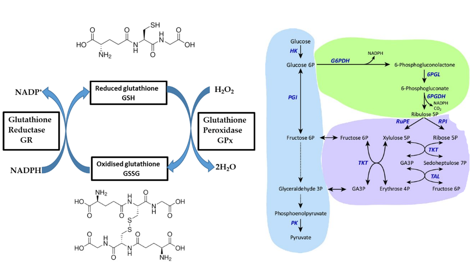
Figura 5
O glutationa (GSH) remove o peróxido de hidrogénio (H₂O₂) através de uma reação enzimática envolvendo a glutationa peroxidase (GPx). Esta enzima catalisa a redução do H₂O₂ em água, utilizando o glutationa como doador de eletrões.
O teste da catalase
Figura 6
O teste da catalase é um ensaio bioquímico simples utilizado para identificar organismos capazes de produzir a enzima catalase. Todos os microrganismos aeróbicos conhecidos produzem catalase. No teste (Figura 7), uma pequena quantidade de cultura bacteriana é exposta a peróxido de hidrogénio, e a formação de bolhas indica um resultado positivo, significando atividade de catalase. Este teste é frequentemente utilizado para diferenciar entre organismos catalase-positivos, como Staphylococcus spp., e catalase-negativos, como Streptococcus spp. na microbiologia clínica.
Ensaio
O protocolo baseia-se numa combinação de um método para preparar células de levedura permeabilizadas com etanol descrito por Trawczyńska & Wójcik 2015 e um ensaio para peróxido utilizando iões de cobalto descrito por Hadwan 2018.
Após as células serem permeabilizadas, o substrato, como o H2O2, consegue alcançar mais facilmente a enzima catalase, e os produtos (H2O e O2) conseguem sair mais facilmente (Figura 8).
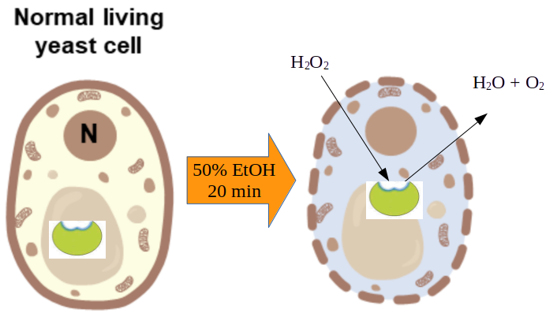
Figura 7
O protocolo de permeabilização é muito simples. As células de levedura são incubadas com etanol durante 20 minutos num tampão de fosfato.
As células permeabilizadas são misturadas com peróxido de hidrogénio e incubadas durante 10 minutos a 37 °C. Durante este tempo, parte do peróxido de hidrogénio é consumido pela catalase e decomposto em oxigénio e água.
O peróxido restante é medido permitindo que este oxide o cobalto(II) para cobalto(III), que pode ser medido com um espectrofotómetro a 440 nm (Figura 9). A oxidação é realizada na presença de iões de carbonato, que formam um complexo rosa com cobalto(II) e um complexo verde com cobalto(III).
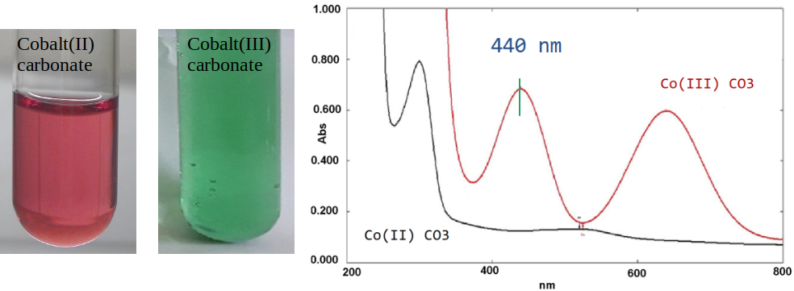
Figura 8
Dia 1: Cultivo das estirpes em meio sólido
Estriem as duas estirpes listadas abaixo em meio sólido YPD e incubem a 30 °C durante ~48 h.
| Número da Estirpe | Designação da Estirpe | Vetor Plasmídeo | Caixa | Pos | ||
|---|---|---|---|---|---|---|
| µ1886 | CENPK111-32D | pTA1 | vetor vazio | Björn12 | 35 | |
| µ1885 | ” | pTA1_TDH3_ScCTT1_PGI1 | vetor de expressão CTT1 | "" | 34 |
Dia 3: Pré-cultura
Inoculem dois tubos de vidro de 50 mL ou pequenos erlenmeyers com ~5 mL de meio SD e incubem a 30 °C com agitação durante ~48 h.
Rotulem os tubos com 1885 e 1886, respetivamente. Estas culturas podem ser guardadas a 4–8 °C no frigorífico durante ~3–4 semanas.
Dia 7: Preparação
Esta etapa deve ser realizada na manhã do dia anterior à aula. Inoculem dois tubos de vidro de 50 mL com 5 mL do mesmo meio, utilizando 100 µL de cada pré-cultura.
Rotulem os tubos com 1885 e 1886.
Dia 8: Aula prática
Preparem 10 mL de solução de peróxido de hidrogénio (10 mM) adicionando 12 µL de peróxido de hidrogénio a 30% a 10 mL de tampão de fosfato 50 mM (pH 7.0). Distribuam ~1 mL da solução de peróxido em quatro tubos Eppendorf, um para cada grupo.
Meçam a densidade ótica (OD) a 640 nm para as culturas. Adicionem meio fresco à cultura com maior OD de forma a igualar a densidade ótica das duas culturas.
Preparem 50 mL de solução de trabalho. A ordem de adição dos componentes é importante:
- 2,5 mL de solução de cobalto (II) (3 x 834 µL)
- 2,5 mL de solução de sal de Graham (3 x 834 µL)
- 45 mL de solução de bicarbonato de sódio (completar com 3 x 834 µL)
Distribuam 5–10 mL da solução de trabalho em quatro tubos FALCON de 50 mL, um para cada grupo. Esta solução deve ser armazenada à temperatura ambiente no escuro.
Protocolo de permeabilização das células de levedura com etanol
| Grupo | Número da Estirpe | Designação da Estirpe | Vetor Plasmídeo |
|---|---|---|---|
| 1 | µ1886 | CENPK111-32D | pTA1 (vetor vazio) |
| 2 | " | " | " |
| 3 | µ1885 | ” | pTA1_TDH3_ScCTT1_PGI1 |
| 4 | " | " | " |
- Cada grupo (G1, G2, G3 e G4) deve retirar 1 mL da cultura indicada na tabela acima para um tubo Eppendorf vazio de 1,5 mL.
- Centrifuguem 🌀 a cultura durante 20 segundos numa microcentrífuga.
- Removam o sobrenadante com uma pipeta P1000.
- Adicionem 1 mL de tampão fosfato 5 mM.
- Ressuspendam as células pipetando para cima e para baixo com a mesma ponta.
- Centrifuguem 🌀 a cultura durante 20 segundos.
- Removam o sobrenadante.
- Adicionem 1 mL de tampão fosfato 5 mM.
- Ressuspendam as células.
- Transfiram 100 µL das células para um novo tubo Eppendorf.
- Adicionem 400 µL de água destilada (dH₂O).
- Adicionem 500 µL de etanol absoluto.
- Misturem o conteúdo do tubo com vórtex durante ~30 segundos.
- Incubem à temperatura ambiente durante 20 minutos no banco de trabalho.
- Marquem nove tubos Eppendorf vazios com um marcador: **Sa, Sb, **Sc, T1a, T1b, T1c, T2a, T2b, e T2c.
- Marquem nove cuvetes de plástico com as mesmas designações.
- Façam uma pausa ☕ até as células estarem prontas. A temporização não é crítica.
Protocolo para medir a atividade da catalase
- Adicionem os componentes na tabela abaixo aos tubos marcados. Os volumes estão indicados em microlitros (µL). Preparem os tubos na ordem indicada (de cima para baixo) e adicionem os componentes pela ordem especificada (da esquerda para a direita). Lembrem-se de que a reação começa com a adição de peróxido, por isso façam esta adição rapidamente para todos os tubos.
| Rótulo | Amostra | Água | Células | Peróxido | Total |
|---|---|---|---|---|---|
| Sa | Standard | 70 | 0 | 140 | 210 |
| Sb | Standard | 70 | 0 | 140 | 210 |
| Sc | Standard | 70 | 0 | 140 | 210 |
| T1a | Teste 1a | 0 | 70 | 140 | 210 |
| T1b | Teste 1b | 0 | 70 | 140 | 210 |
| T1c | Teste 1c | 0 | 70 | 140 | 210 |
| T2a | Teste 2a | 35 | 35 | 140 | 210 |
| T2b | Teste 2b | 35 | 35 | 140 | 210 |
| T2c | Teste 2c | 35 | 35 | 140 | 210 |
- Incubem os tubos Eppendorf a 🌡️ 37 °C num banho-maria 🛁 durante 10 minutos. ⏱️ Este tempo é crítico!
- Adicionem 800 µL da solução de trabalho a cada tubo.
- Misturem invertendo os tubos.
- Incubem à temperatura ambiente durante pelo menos 10 minutos no escuro 🌙. Guardem os tubos numa gaveta vazia do laboratório.
- Centrifuguem 🌀 durante 20 segundos na velocidade máxima.
- Transfiram os sobrenadantes para as cuvetes marcadas da mesma forma. Tirem uma fotografia 📷 das cuvetes com o vosso telemóvel e façam upload para o Google Photos.
- Registem a absorbância de cada cuvete a 440 nm contra o ar. Coloquem a cuvete conforme as instruções do espectrofotómetro GENESYS20.
- Adicionem os dados à folha de cálculo do Google.
Referências:
Esta aula prática baseia-se numa combinação de métodos descritos nas seguintes publicações:
-
Trawczyńska, I., & Wójcik, M. (2015). Optimization of permeabilization process of yeast cells for catalase activity using response surface methodology. Biotechnology, Biotechnological Equipment, 29(1), 72–77. Link
-
Hadwan, M. H. (2018). Simple spectrophotometric assay for measuring catalase activity in biological tissues. BMC Biochemistry, 19(1), 7. Link
Outras referências de interesse:
-
Kaplan, J. G. (1963). The reversion of catalase during growth of yeast in anaerobiosis. The Journal of General Physiology, 47, 103–115. Link
-
Martins, D., & English, A. M. (2014). Catalase activity is stimulated by H(2)O(2) in rich culture medium and is required for H(2)O(2) resistance and adaptation in yeast. Redox Biology, 2, 308–313. Link
Como calcular a atividade da catalase
Todos os valores de absorbância são medidos num espectrofotómetro calibrado contra o ar, sem uma cuvete (Figura 10).
A reação Standard na Figura 10 contém apenas peróxido de hidrogénio e carbonato de cobalto(II). Todo o peróxido disponível deve oxidar o cobalto(II) para cobalto(III).
As reações Teste contêm H2O2 e células. Parte do peróxido deverá ter sido consumida pela catalase nas células, pelo que o valor da absorbância a 440 nm deverá ser inferior ao da reação Standard.
A absorbância que deveria ter sido observada para o H₂O₂ consumido é a diferença entre a absorbância da reação Standard e a reação Teste. Espera-se uma absorbância mais elevada para o Teste 2, pois uma menor quantidade de células deve consumir menos peróxido.
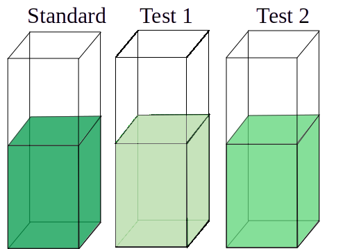
Figura 9
Utiliza-se uma curva padrão (Figura 11) para calcular a concentração real das amostras. A atividade é então calculada a partir da diferença de concentração entre o Standard e a amostra, dividida pelo tempo da reação.
Curva de calibração
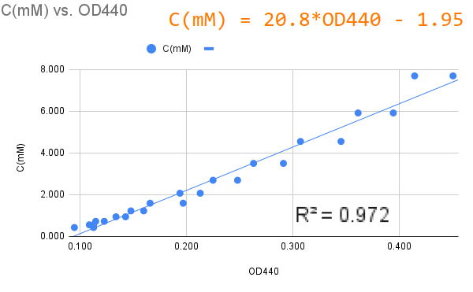
Figura 10
Uma solução de peróxido de hidrogénio a 10 mM foi diluída em série (Figura 11), começando por preparar doze tubos Eppendorf com 300 µL de água destilada. Um mililitro de peróxido de hidrogénio foi transferido para o primeiro tubo. O conteúdo foi misturado pipetando 5–6 vezes, seguido de uma transferência de 1 mL para o tubo seguinte. No último tubo (12), o volume final foi 1,3 mL, enquanto nos tubos anteriores foi 300 µL. A concentração no primeiro tubo foi calculada sera 1 mL * 10 mM/1.3 mL = 7.6923 mM. O fator de diluição foi constante (1/1.3). A concentração de cada tubo foi calculada pela fórmula: onde n = 1..12.
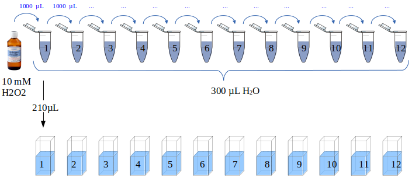
Figura 11
Series#1
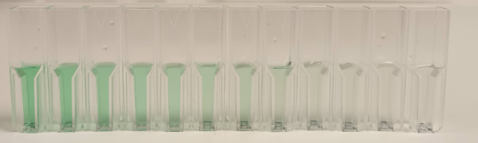
Series#2
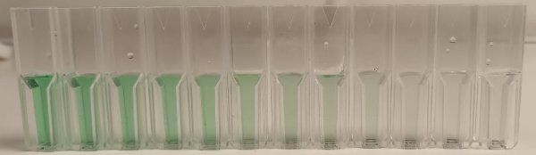
Figure 12
As medições de absorbância foram coletadas na tabela abaixo:
| Tubo | Concentração (mM) | Série#1 | Série#2 |
|---|---|---|---|
| 1 | 7.692 | 0.450 | 0.414 |
| 2 | 5.917 | 0.394 | 0.361 |
| 3 | 4.551 | 0.345 | 0.307 |
| 4 | 3.501 | 0.291 | 0.263 |
| 5 | 2.693 | 0.248 | 0.225 |
| 6 | 2.072 | 0.213 | 0.194 |
| 7 | 1.594 | 0.197 | 0.166 |
| 8 | 1.226 | 0.160 | 0.148 |
| 9 | 0.943 | 0.143 | 0.134 |
| 10 | 0.725 | 0.123 | 0.115 |
| 11 | 0.558 | 0.109 | 0.113 |
| 12 | 0.429 | 0.113 | 0.095 |
Linearidade
O protocolo especifica dois experimentos (Figura 6), Teste 1 e Teste 2, onde o último contém metade das células. Se o ensaio for linear, o Teste 1 deverá produzir o dobro da absorbância do Teste 2.
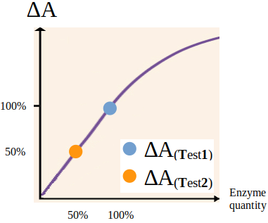
Figura 13
Material 🇬🇧
dH2O 4 x 40 mL
100 mL liquid SD (Synthetic Defined) medium
- 6.7 g/L Yeast Nitrogen Base (YNB) WITHOUT AMINO ACIDS
- 20 g/L glucose
10 x 50 mL glass culture tubes with cotton stopper or aluminium cap
25 mL Ethanol 95-99% (2 courses * 3 shifts * 4 groups * 0.5 mL = 12 mL)
Six empty new FALCON tubes 50 mL
250 mL 50 mM phosphate buffer (pH 7.0)
This buffer can be prepared by by mixing two solutions in ultrapure water:
- 100 mL 6.81 g/L KH2PO4
- 100 mL 8.90 g/L K2HPO4
300 mL Sodium bicarbonate (NaHCO3) solution
Prepared by dissolving 24 g (MW 84.01 g/mol) in 300 ml ultrapure water. This solution should be stored at room temperature.
25 mL Cobalt (II) solution
Prepared by dissolving 0.51 g of Co(NO3)2 x 6H2O in 25 ml of distilled water. This solution should be stored at room temperature in the dark.
25 mL Graham salt (Sodium hexametaphosphate) solution
Prepared by dissolving 0.25 g of (NaPO3)6 in 25 ml of distilled water. This solution should be stored at room temperature.
0.5 mL Hydrogen peroxide solution 30%
- Eppendorf tubes 1.5 mL (new, not sterile)
- Blue tips
- Yellow tips
- Plastic cuvettes
Equipmen
- 37 °C water bath
- boat for cuvettes
- microcentrifuge
- vortex
- P1000 pipettes
- P200 pipettes
Preparação 🇵🇹
Dia 1 Cultivo de estirpes em meio sólido
Estriar as duas estirpes abaixo em meio sólido YPD e incubar a 30 °C por ~48 h.
| Número da Estirpe | Designação da Estirpe | Vetor Plasmídeo | caixa | pos | |
|---|---|---|---|---|---|
| µ1886 | CENPK111-32D | pTA1 | vetor vazio | Björn12 | 35 |
| µ1885 | ” | pTA1_TDH3_ScCTT1_PGI1 | vetor de expressão CTT1 | "" | 34 |
Pré-cultura do Dia 3
Inocular dois tubos de vidro de 50 mL com ~5 mL de meio SD e incubar a 30 °C por ~48 h. Rotular os tubos 5 e 6 para µ1885 e µ1886, respetivamente. Estas culturas podem ser mantidas a 4-8°C no frigorífico durante ~3-4 semanas.
Preparação do Dia 7
Esta etapa deve ser realizada na manhã do dia anterior à aula. Inocular dois tubos de vidro de 50 mL com 5-10 mL do mesmo meio usando 100 µL de cada pré-cultura. Rotular os tubos com 5 ou 6.
Material 🇵🇹
100 mL de meio líquido SD (Synthetic Defined)
- 6,7 g/L de Base de Nitrogénio de Levedura (YNB) SEM AMINOÁCIDOS
- 20 g/L de glicose
10 x 50 mL tubos de cultura de vidro com rolha de algodão ou tampa de alumínio
25 mL de Etanol 95-99% (2 cursos * 3 turnos * 4 grupos * 0,5 mL = 12 mL)
Seis tubos FALCON novos e vazios de 50 mL
250 mL de tampão fosfato 50 mM (pH 7,0)
Este tampão pode ser preparado misturando duas soluções em água ultrapura:
- 100 mL de 6,81 g/L de KH2PO4
- 150 mL de 8,90 g/L de Na2HPO4
300 mL de solução de Bicarbonato de Sódio (NaHCO3)
Preparada dissolvendo 24 g (PM 84,01 g/mol) em 300 mL de água ultrapura. Esta solução deve ser armazenada à temperatura ambiente.
25 mL de solução de Cobalto (II)
Preparada dissolvendo 0,51 g de Co(NO3)2 x 6H2O em 25 mL de água destilada. Esta solução deve ser armazenada à temperatura ambiente no escuro.
25 mL de solução de sal de Graham (Hexametafosfato de Sódio)
Preparada dissolvendo 0,25 g de (NaPO3)6 em 25 mL de água destilada. Esta solução deve ser armazenada à temperatura ambiente.
0,5 mL de solução de Peróxido de Hidrogénio a 30%
- Tubos Eppendorf de 1,5 mL (novos, não estéreis)
- Pontas azuis
- Pontas amarelas
- Cuvetes de plástico
Equipamento
- Banho-maria a 37 °C
- Barcos para tubos
- Microcentrífuga
- Vórtex
- Pipetas P1000
- Pipetas P200